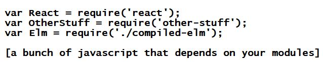
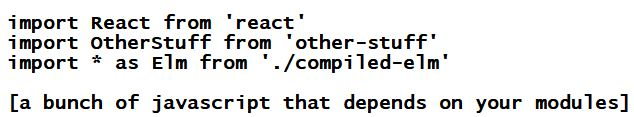
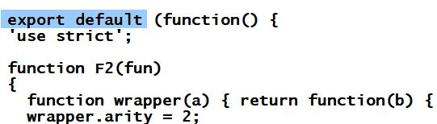
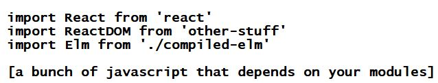

How do I turn my compiled Elm into a javascript module?
Javascript modules come in two flavors (that I know of): commonjs modules and es6 modules. I don't know why you'd pick one flavor over the other, but I will show you how to do both.
How do I turn my compiled Elm into a commonjs module?
Your compiled Elm already is a commonjs module - surprise! The Elm compiler does this for you. Right out of the box. No configuration necessary. Just add a new require statement to your Elm-consuming javascript, and you're off to the races (I have assumed that your compiled Elm lives in a file named compiled-elm.js):
If your application is made up of es6 modules then you will probably want to import your Elm javascript module like this:
..but so far as I know it's perfectly acceptable to mix import and require statements, so you could just keep going with require if you want.
Achievement unlocked! You are now consuming your Elm as a commonjs module. You will only need the next section if you would prefer to have your compiled Elm in the style of an es6 module.
How do I turn my compiled Elm into an es6 module?
Step 1: Compile your Elm. If you need help with this step, click here.
Step 2: Open compiled-elm.js (I have assumed that your compiled Elm lives in a file named compiled-elm.js) in your favorite text editor and change it like so:
Boom! compiled-elm.js now contains one legitimate es6 module.
You'll probably import your new es6 module like this:
Step 3 (optional, but a good idea): Find a resource that you like, and learn more about es6 modules. You can only go so far without a solid foundation beneath you.